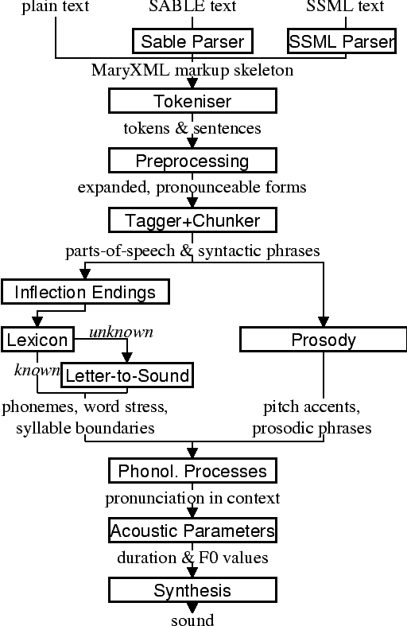

The following figure gives details of the processing architecture within MARY, exemplified according to the German system. The processing architecture for other languages is similar.
Plain text is the most basic, and maybe most common input format. Nothing is known about the structure or meaning of the text. The text is embedded into a MaryXML document for the following processing steps.
SABLE is a markup language for annotating texts in view of speech synthesis, developed in the 1990's.
Speech synthesis markup languages are useful for providing information about the structure of a document, the meaning of numbers, or the importance of words, so that this information can be appropriately expressed in speech (such as pausing in the right places, pronouncing telephone numbers appropriately, or putting emphasis on the word carrying focus). Such information may be provided by a human user or, more likely, by other processing units such as natural language generators, email processors, or HTML readers.
SSML is a markup language for annotating texts in view of speech synthesis. It was proposed by the W3C as a standard.
Speech synthesis markup languages are useful for providing information about the structure of a document, the meaning of numbers, or the importance of words, so that this information can be appropriately expressed in speech (such as pausing in the right places, pronouncing telephone numbers appropriately, or putting emphasis on the word carrying focus). Such information may be provided by a human user or, more likely, by other processing units such as natural language generators, email processors, or HTML readers.
As both SABLE and MaryXML markup are XML-conform markup languages, an XSLT Stylesheet Transformation is used to transform SABLE into MaryXML.
The benefit of this method lies in the fact that in order to parse a different markup language, all that needs to be done is writing a new stylesheet for the translation into MaryXML.
As both SSML and MaryXML markup are XML-conform markup languages, an XSLT Stylesheet Transformation is used to transform SSML into MaryXML.
The benefit of this method lies in the fact that in order to parse a different markup language, all that needs to be done is writing a new stylesheet for the translation into MaryXML.
MaryXML is an internal, relatively low-level markup which reflects the modelling capabilities of this particular TtS system. MaryXML is based on XML. A MaryXML Schema formally specifies the structure of a correct MaryXML document. (This first MaryXML skeleton, before tokenisation, is not required to comply to the MaryXML Schema which assumes text data to be tokenised. All subsequent intermediate MaryXML results (module outputs) do comply to the MaryXML Schema.
Through subsequent processing modules, the MaryXML structure is enriched. If a module finds the type of information it is supposed to add already present, that information is given piority. This means that the realisation indications expressed in the input markup (e.g., SABLE, SSML) are considered as supplements to the modules' text-to-speech analysis of the input.
For example, if the prosody module does not get information from its input on the locations and types of accents and boundaries, it will use its default rules to determine them. If it finds partial information in its input, such as the location, but not the type of an accent, it will apply its rules to fill in the missing piece of information.
The tokeniser cuts the text into tokens, i.e. words and punctuation marks. It uses a set of rules determined through corpus analysis to label the meaning of dots based on the surrounding context. Each token is enclosed by a <t>...</t> MaryXML tag. All local information about a token determined by subsequent processing steps is added to that token's <t> tag as attribute/value pairs. In addition, the punctuation is used to determine start and end of sentences which are marked using the MaryXML <s>...</s> tag enclosing a sentence.
In the preprocessing module, those tokens for which the spoken form does not entirely correspond to the written form are replaced by a more pronounceable form.
The pronunciation of numbers highly depends on their meaning. Different number types, such as cardinal and ordinal numbers, currency amounts, or telephone numbers, must be identified as such, either from input markup or from context, and replaced by appropriate token strings.
While the expansion of cardinal numbers is straightforward, the expansion of ordinal numbers poses interesting problems in German, because of their inflections. On the one hand, the expansion of an ordinal number depends on its part-of-speech (adverb or adjective); on the other hand, for adjective ordinals, the inflection ending depends on gender, number and case of the noun phrase the ordinal belongs to. In the preprocessing module, none of that information is available, so the ordinal number is simply marked as such, and a stem expansion is given. For example, the ordinal "1." would become "erstens" ("firstly") in adverbial position ("denn 1. ist das ...") and "erste/ersten/erstes/erster" in adjectival position. This module adds the information ending="ordinal" and sounds_like="erste" to the ordinal's tag. Based on this markup, the correct ending will be selected during phonemisation (see Inflection endings).
Two main groups of abbreviations are distinguished: Those that are spelled out, such as "USA", and those that need expansion. The first group of appreviations are correctly pronounced by spelling rules.
The second group is pronounced using an expansion table, containing a graphemic and optionally a phonemic expansion. The latter is expecially useful for foreign abbreviations, such as "FBI" which is pronounced as the English spelling [Ef-bi:-'?aI] in German.
One group of abbreviations, such as "engl.", pose a problem similar to ordinal numbers: Depending on the context, they can be adverbs ("englisch"), or to-be-inflected adjectives ("englische/n/s/r"). This group is specially marked in the expansion table and consecutively in the markup (ending="adjadv" sounds_like="englisch") for later processing (see Inflection endings).
For more information about the problems of text normalisation in German, see Breitenbücher(1999).
Part-of-speech tagging is performed with the statistical tagger TnT, using the Stuttgart-Tübingen Tagset (STTS), and trained on the manually annotated NEGRA corpus. A chunk parser is used to determine the boundaries of noun phrases, prepositional phrases and adjective phrases.
Part-of-speech and chunking information is added to each token's <t> tag. For the chunking information, this is not actually a very satisfactory solution, as the local syntactic structure can hardly be considered a property of the individual token. However, the more logical representation of syntactic structure as an XML tree structure would possibly conflict with the prosodic structure, due to the fact that syntactic and prosodic structure cannot be guaranteed to coincide in all cases. As XML only allows for a proper tree structure, with no crossing edges, the only alternative seems to be to give up XML representation in the present form in favour of, e.g., a chart representation allowing more flexible edges. However, the presently used encoding with the XML structure representing prosodic structure and syntactic structure "squeezed" into the token tags seems to be a viable solution.
This module deals with the ordinals and abbreviations which have been marked during preprocessing as requiring an appropriate inflection ending. The part-of-speech information added by the tagger tells whether the token is an adverb or an adjective. In addition, information about the boundaries of noun phrases has been provided by the chunker, which is relevant for adjectives. In the lexicon, all entries occurring in noun phrases (determiners, adjectives, and nouns) are annotated with their possible value combinations for the morphological inflection information gender, number and case. In addition, determiners are marked as definite or indefinite. This information was obtained from the morphological analyser Mmorph.
When the inflection endings module finds an ordinal or an abbreviation with an adjectival role, it performs a unification of the morphological variables over the known tokens in the noun phrase to which the ordinal or abbreviation belongs. In many cases, this allows to determine the appropriate values of gender, number and case for the ordinal or abbreviation and thus the correct ending, which is added to the expanded form.
For example, in "mein 2. Angebot" ("my second offer"), the words "mein" and "Angebot" are looked up in the lexicon, their associated values for gender, number and case are compared, and only the common ones (gender=neutral, number=singular, case=nom.|acc.) are retained. All remaining possibilities (neutral/singular/nom. and neutral/singular/acc.) correspond to the same adjective ending ("-s" with indefinite determiner "mein"), so the correct adjective ending can be added to the ordinal: "zweites".
The pronunciation lexicon is custom-made by DFKI and contains the graphemic form, a phonemic transcription, a special marking for adjectives, and some inflection information. As the inflection of adjectives is quite regular in German, only the stem form of an adjective is contained in the lexicon, while all inflected forms are generated by the lexicon lookup program.
The lexicon performs a simple compound treatment. If a word is not found in the lexicon but is the concatenation of two or more lexicon entries, the corresponding phonemic forms are concatenated. An optional "+s+" bounding morph, typical for German noun compounds, is also allowed. For all parts of a compound except the first, primary word stress is reduced to secondary stress, i.e. the first part is considered the dominant one, which seems to be the default for German.
Unknown words that cannot be phonemised with the help of the lexicon are analysed by a "letter-to-sound conversion" algorithm.
Letter-to-sound rules are statistically trained on the MARY lexicon, following the algorithm proposed by Alan Black et al.
The syllabification of the transcribed words is based on standard phonological principles such as the sonority hierarchy of phonemes, the maximal onset principle, the obligatory coda principle and the phonotactic restrictions for the German language.
Last, a word stress assignment algorithm decides which syllable gets the primary lexical stress. No rule-based secondary stress assignment is attempted at present.
The output of the phonemisation component contains the phonemic transcription (using German SAMPA) for each token, as well as the source of this transcription (simple lexicon lookup, lexicon lookup with compound analysis, letter-to-sound rules, etc.).
Prosody is modelled using GToBI, an adaptation of ToBI ("Tones and Break Indices") for German. ToBI describes intonation in terms of fundamental frequency (F0) target points, distinguishing between accents associated with prominent words and boundary tones associated with the end of a phrase. The size of a phrase break is encoded in break indices. Within Mary, break indices are used as follows: "2" is a potential boundary location (which might be "stepped up" and thus realised by some phonological process later on); "3" denotes an intermediate phrase break; "4" is used for intra-sentential phrase breaks; "5" and "6" (not part of GToBI) represent sentence-final and paragraph-final boundaries.
The prosody rules module assigns the symbolic GToBI labels. In a later step (see Calculation of acoustic parameters), these are translated into concrete F0 targets and pause durations.
The prosody rules were derived through corpus analysis and are mostly based on part-of-speech and punctuation information. Some parts-of-speech, such as nouns and adjectives, always receive an accent; the other parts-of-speech are ranked hierarchically (roughly: full verbs > modal verbs > adverbs), according to their aptitude to receive an accent. This ranking comes into play where the obligatory assignment rules do not place any accent inside some intermediate phrase. According to a GToBI principle, each intermediate phrase should contain at least one pitch accent. In such a case, the token in that intermediate phrase with the highest-ranking part-of-speech receives a pitch accent.
After determining the location of prosodic boundaries and pitch accents, the actual tones are assigned according to sentence type (declarative, interrogative-W, interrogative-Yes-No and exclamative). For each sentence type, pitch accent tones, intermediate phrase boundary tones and intonation phrase boundary tones are assigned. The last accent and intonation phrase tone in a sentence is usually different from the rest, in order to account for sentence-final intonation patterns.
Once the words are transcribed in a standard phonemic string including syllable boundaries and lexical stress on the one hand, and the prosody labels for pitch accents and prosodic phrase boundaries are assigned on the other hand, the resulting phonological representation can be re-structured by a number of phonological rules. These rules operate on the basis of phonological context information such as pitch accent, word stress, the phrasal domain or, optionally, requested articulation precision. Segment-based rules can be applied, such as the elision of Schwa in the endings "-en" and "-em", the backward assimilation of articulation place for nasal consonants, and the insertion of glottal stops before vowels of pitch-accented syllables with a free onset. However, with diphone speech such reductions seem to limit the intelligibility, so that they are deactivated by default.
The output of the postlexical phonological rules module gives a rich MaryXML structure, containing all the information added to the structure by all of the preceding modules.
This module performs the translation from the symbolic to the physical domain. The MaryXML structure is interpreted by duration rules and GToBI realisation rules. The duration rules are a version of the Klatt rules adapted for German, by fitting the rule parameters to data from the Kiel Corpus.
The realisation of GToBI tones uses a set of target points for each tone symbol. These targets are positioned, on the time axis, relative to the nucleus of the syllable they are attached to; on the frequency axis, they are positioned relative to a descending pair of topline and baseline representing the highest and lowest possible frequency at a given moment. The fact that these lines are descending accounts for declination effects, i.e. overall F0 level is higher at the beginning of a phrase than close to the end. As an example, the GToBI accent "L+H*", associated with the syllable ['fUn] of the sequence [g@-'fUn-d@n] ("found") is realised as a target on the baseline at the start of the Schwa of [g@], followed by a target on the topline in the middle of the [U] in ['fUn]. Obviously, the actual frequency values of the topline and baseline need to be set appropriately for the voice to be used during synthesis, in particular according to the sex of the speaker.
The output produced by the calculation of acoustic parameters module is a maximal MaryXML structure, which can be used e.g. to derive timing information for synchronizing speech with taking heads and embodied conversational agents.
The structure can also be reduced to more simple synthesizer input, e.g. a list containing the individual segments with their durations as well as F0 targets, a format compatible with the MBROLA .pho input files.
Among others, MBROLA is used for synthesising the utterance based on the output of the preceding module. Several diphone sets for a number of male and female voices can be used.
MARY also contains basic unit selection code, based on the cluster unit selection code taken from FreeTTS.